25 Grafik för att kommunicera
Det här avsnittet handlar om verktyg för att göra grafiken mer lättförståelig för andra, för att kunna kommunicera din förståelse av data. Vi ska använda ggplot2 + några extensions: ggrepel och viridis så dessa behöver installeras.
## Loading required package: viridisLite25.1 Etiketter (labels)
Du behöver definiera tydliga etiketter som förklarar vad det är som man ser i grafen. Du lägger till etiketter med hjälp av labs(). Till exempel, för att lägga till en titel på hela grafen:
ggplot(mpg, aes(displ, hwy)) +
geom_point(aes(color = class)) +
geom_smooth(se = FALSE) +
labs(title = "Bränsleeffektiviteten minskar generellt med motorstorlek")## `geom_smooth()` using method = 'loess' and formula 'y ~ x'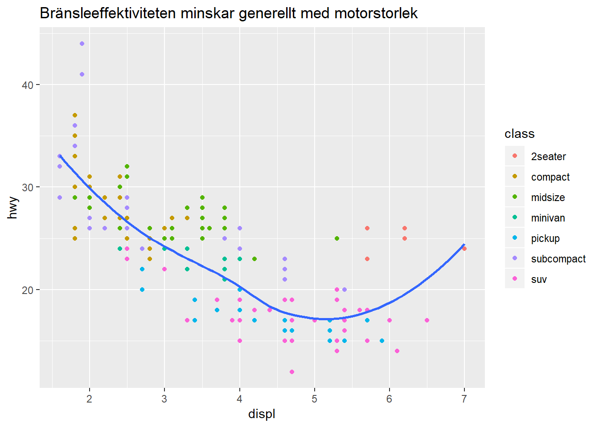
Här summeras huvudfyndet. Det finns ett par ytterligare som kan hjälpa till att förtydliga vad grafen innehåller:
- subtitle - lägger till ytterligare detaljer i en mindre font under huvudtiteln
- caption - lägger till text nedtill höger i grafen t.ex. för att beskriva data-källan.
ggplot(mpg, aes(displ, hwy)) +
geom_point(aes(color = class)) +
geom_smooth(se = FALSE) +
labs(
title = "Bränsleeffektiviteten minskar generellt med motorstorlek",
subtitle = "Sportbilar (2-sits) är ett undantag pga deras lägre vikt",
caption = "Källa: fueleconomy.gov"
)## `geom_smooth()` using method = 'loess' and formula 'y ~ x'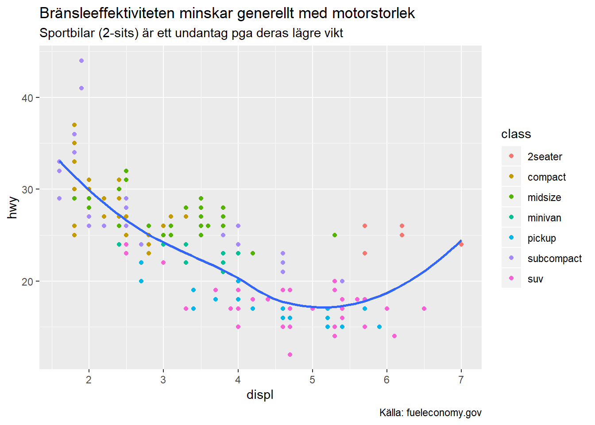
Du kan även använda labs() till att byta ut etiketterna för x- och y-axlarna och till ev teckenförklaring:
ggplot(mpg, aes(displ, hwy)) +
geom_point(aes(colour = class)) +
geom_smooth(se = FALSE) +
labs(
x = "Motorstorlek (lit)",
y = "Bränsleekonomi (miles per gallon)",
colour = "Biltyp"
)## `geom_smooth()` using method = 'loess' and formula 'y ~ x'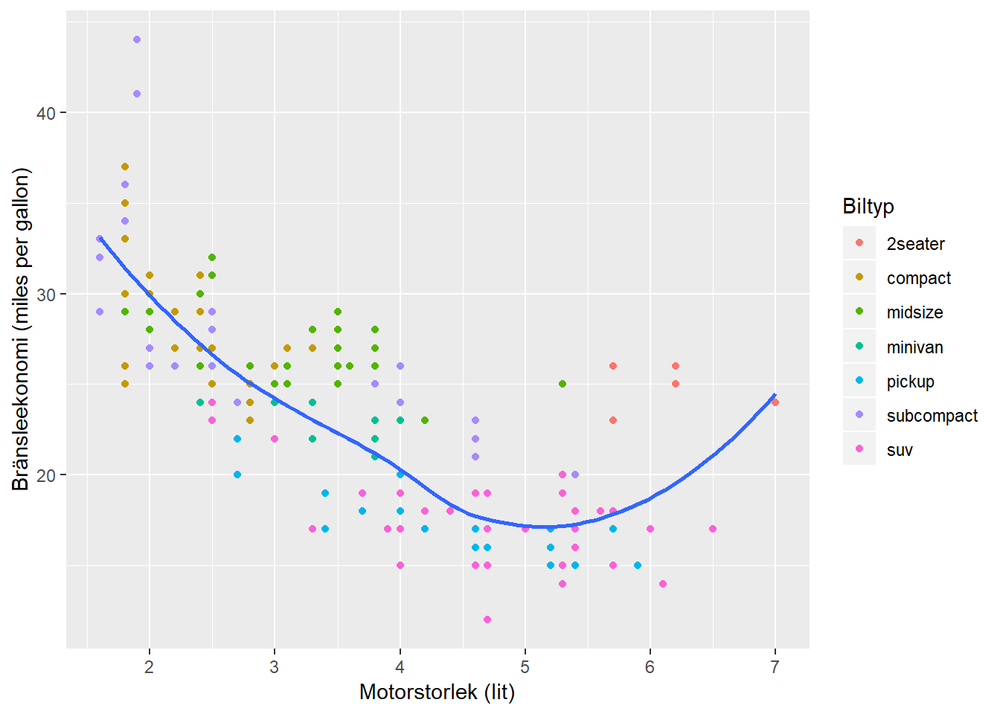
Och även använda matematiska uttryck istället för textsträngar. Byt ut "" mot quote() och se ?plotmath för tillgängliga alternativ:
df <- tibble(
x = runif(10),
y = runif(10)
)
ggplot(df, aes(x, y)) +
geom_point() +
labs(
x = quote(sum(x[i] ^ 2, i == 1, n)),
y = quote(alpha + beta + frac(delta, theta))
)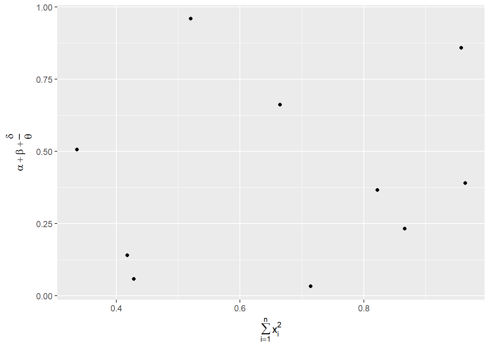
25.2 Annoteringar
Det är också möjligt att göra annoteringar på grafen för t.ex. grupper av observationer. Ett viktigt verktyg för detta är geom_text() vilket liknar geom_point men har ett ytterligare aes-argument: label.
Texten till sådana etiketter kan genereras på två sätt. Det kan finnas en tibble som kan ge texten. Nedanstående graf är kanske inte särskilt meningsfull men illustrativ: lyft fram det mest effektiva märket i varje bil-klass och sätt en etikett på denna i grafen:
best_in_class <- mpg %>%
group_by(class) %>%
filter(row_number(desc(hwy)) == 1)
ggplot(mpg, aes(displ, hwy)) +
geom_point(aes(colour = class)) +
geom_text(aes(label = model), data = best_in_class)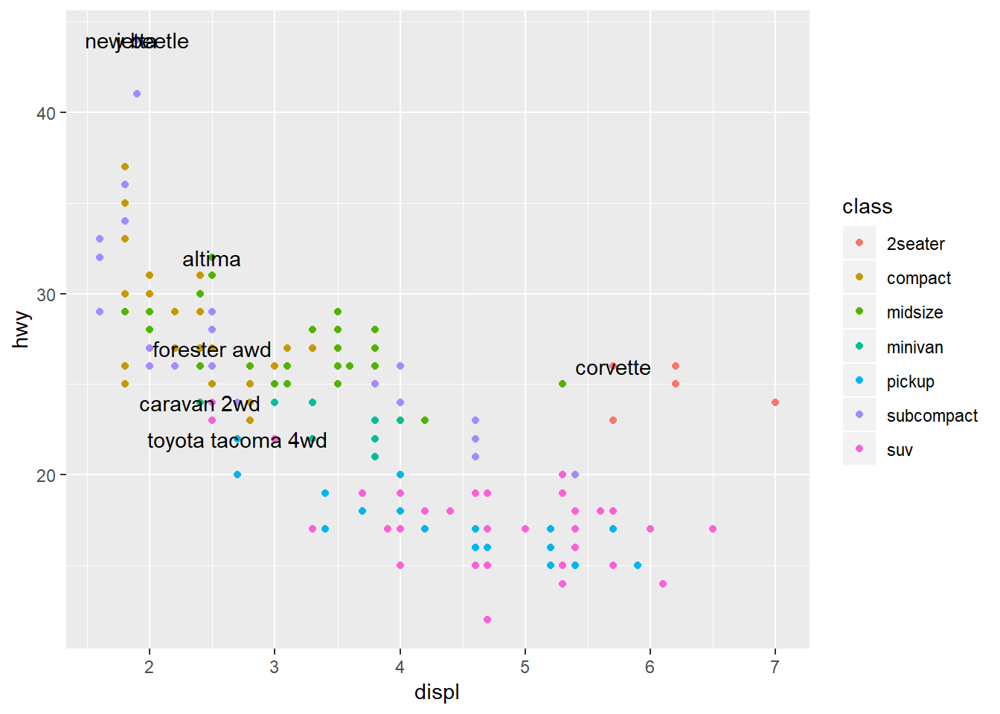
Detta är svårt att läsa av pga överlappande etiketter. Det kan vi delvis avhjälpa genom att använda geom_label() som ritar en rektangel bakom texten. Vi kan också använda nudge_y för att flytta etiketterna lite över motsvarande punkter:
ggplot(mpg, aes(displ, hwy)) +
geom_point(aes(colour = class)) +
geom_label(aes(label = model), data = best_in_class, nudge_y = 2, alpha = 0.5)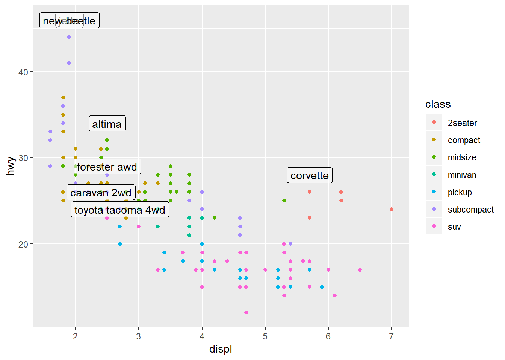
Delvis bättre, men fortfarande finns problem upp till vänster som inte kan avhjälpas genom att transformera etiketterna. Istället använder vi funktionen geom_label_repel() i modulen ggrepel. I denna modul finns en rad verktyg för att se till att etiketter inte överlappar:
ggplot(mpg, aes(displ, hwy)) +
geom_point(aes(colour = class)) +
geom_point(size = 3, shape = 1, data = best_in_class) +
ggrepel::geom_label_repel(aes(label = model), data = best_in_class)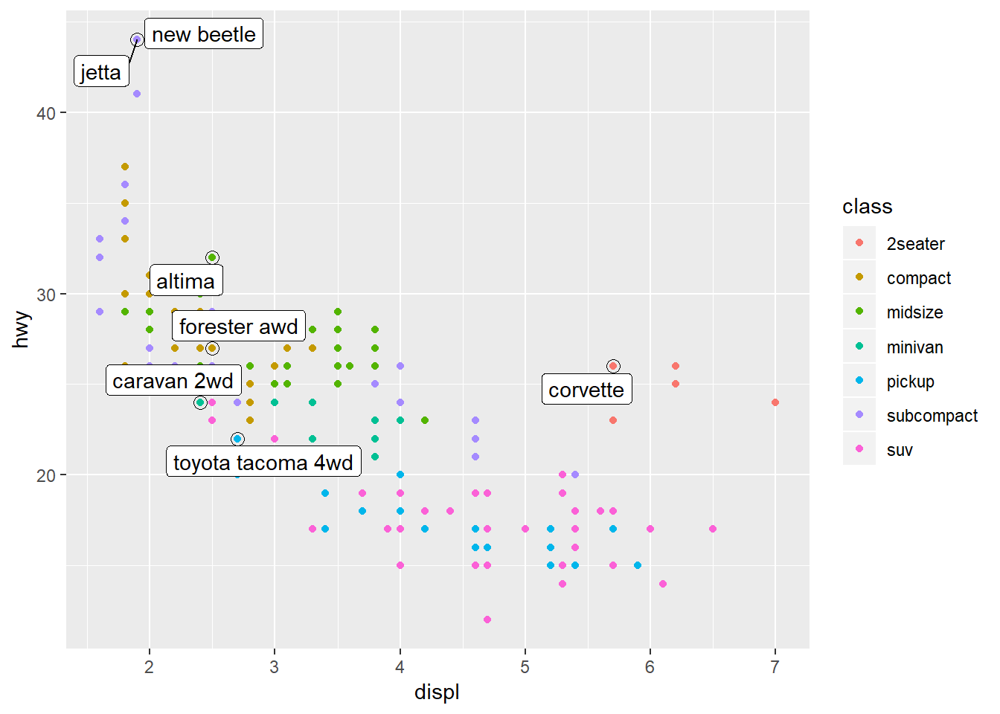
Här används också ett ytterligare lager som markerar den etiketterade punkten.
25.3 Scales
Scales kontrollerar mappningen av data. Typiskt lägger ggplot2 automatiskt till scales. Till exempel:

ggplot2 lägger automatiskt till scales :
ggplot(mpg, aes(displ, hwy)) +
geom_point(aes(colour = class)) +
scale_x_continuous() +
scale_y_continuous() +
scale_colour_discrete()
Notera hur benämningen av de specifika scales sker: scale_ följd av namnet på aesthetic, sedan _, sedan namnet på scale. Default-namn bestäms av typen av variabler de är associerade med: kontinuerliga, diskreta, datum etc. Oftast fungerar default-valen väl men det finns ibland skäl att välja en annan scale:
- Du vill tweaka några parametrar av default scale, t.ex. ticks och värden på axlarna eller etiketterna på teckenförklaringen
- Du vill ersätta en viss scale med en annan som du anser är mer ändamålsenlig.
25.3.1 Axis ticks och teckenförklaringar
De två primära argumenten för att påverka hur ticks och teckenförklaringar visas är breaks och labels. breaks kontrollerar positionen på ticks eller värdet associerat med de olika teckenkategorierna. labels kontrollerar texten på etiketten på respektive ticks eller förklaring:
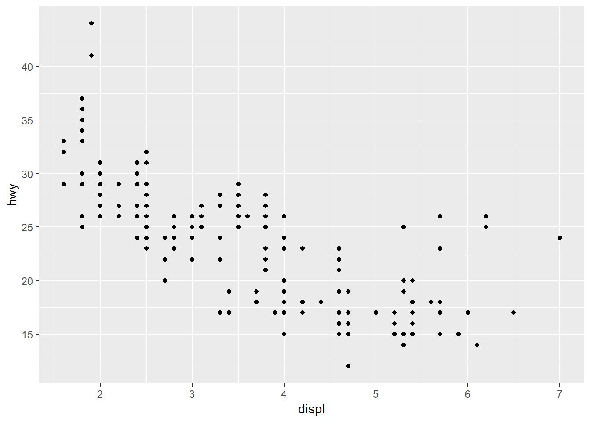
Du kan använda labels på samma sätt som breaks (dvs en character vektor av samma längd som breaks) men du kan även sätta labels = NULL för att inte ha några labels alls:
ggplot(mpg, aes(displ, hwy)) +
geom_point() +
scale_x_continuous(labels = NULL) +
scale_y_continuous(labels = NULL)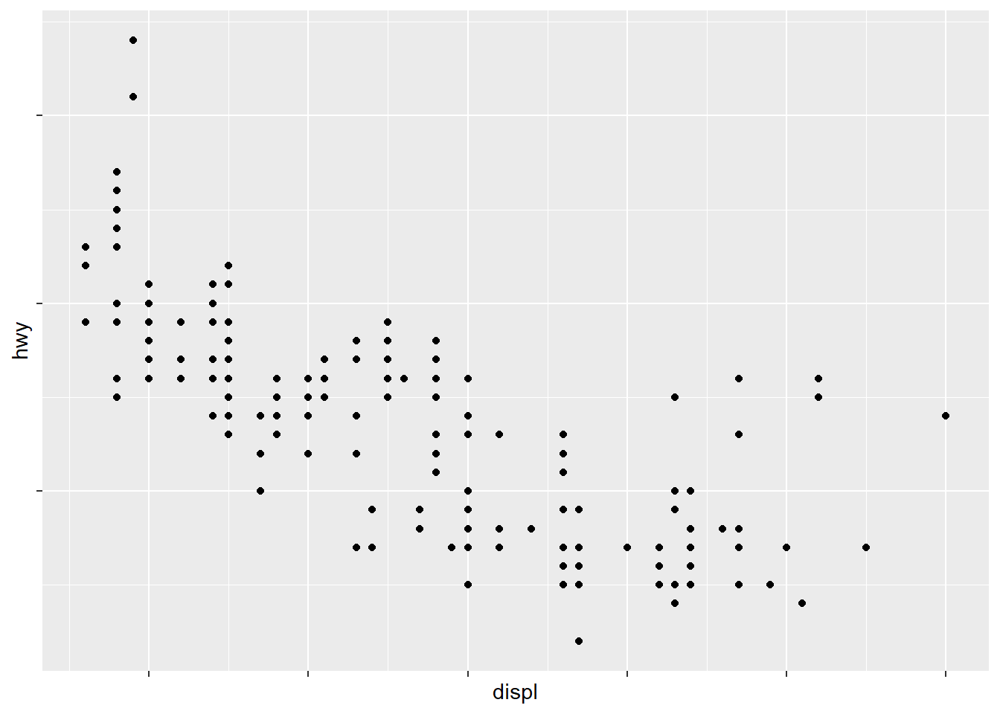
Du kan även använda breaks och labels för att kontrollera hur teckenförklaringen (legend) ser ut. Axlarna och teckenförklaringen kallas tillsammans för guides.
25.3.2 Teckenförklaringens (legend) layout
Argumenten breaks och legend används fr.a. för axlarnas utformning. De fungerar även för teckenförklaringen men det finns några andra verktyg som du sannolikt kommer att använda mer.
För att kontrollera teckenförklaringens position används ett tema, en theme(). Dessa styr de komponenter i grafen som inte är data. Argumentet legend.position styr vart teckenförklaringen placeras:
base <- ggplot(mpg, aes(displ, hwy)) +
geom_point(aes(colour = class))
base + theme(legend.position = "left")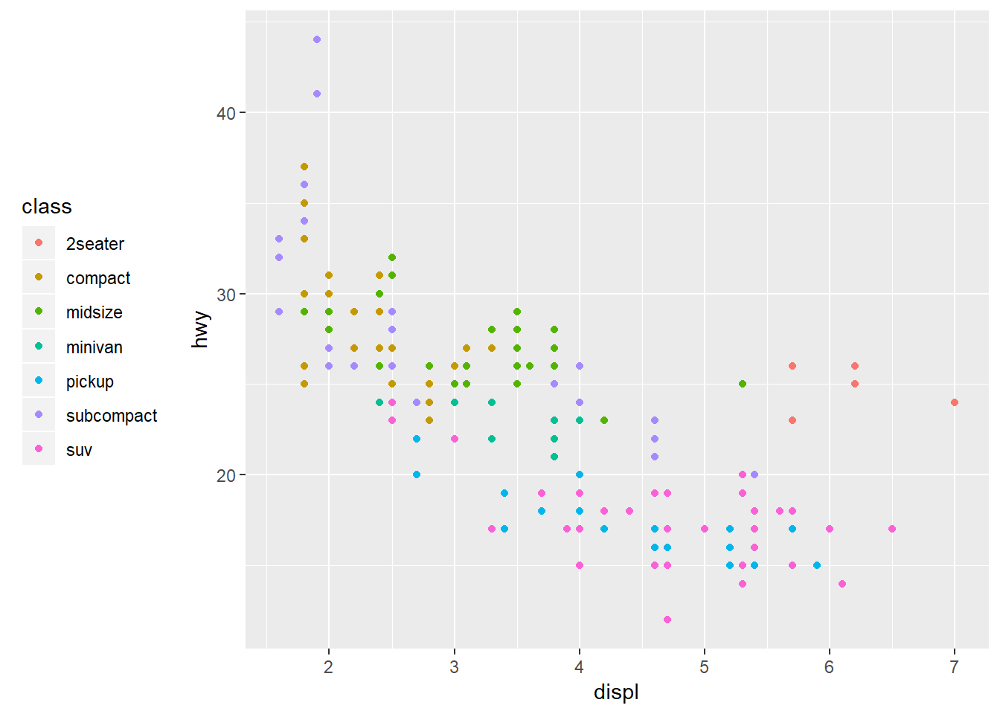
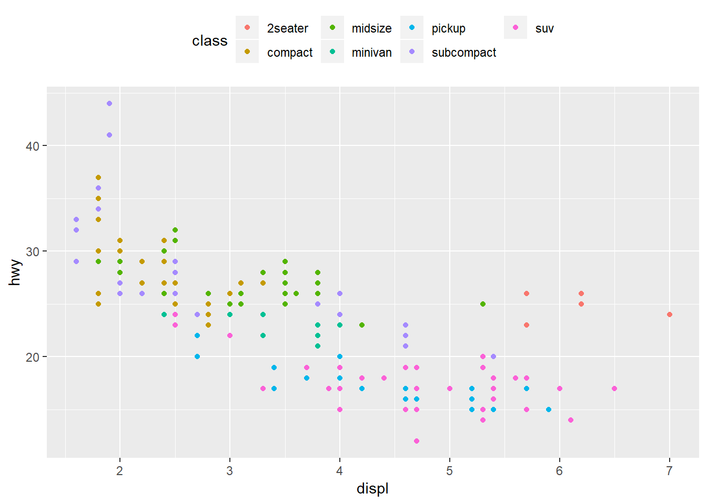
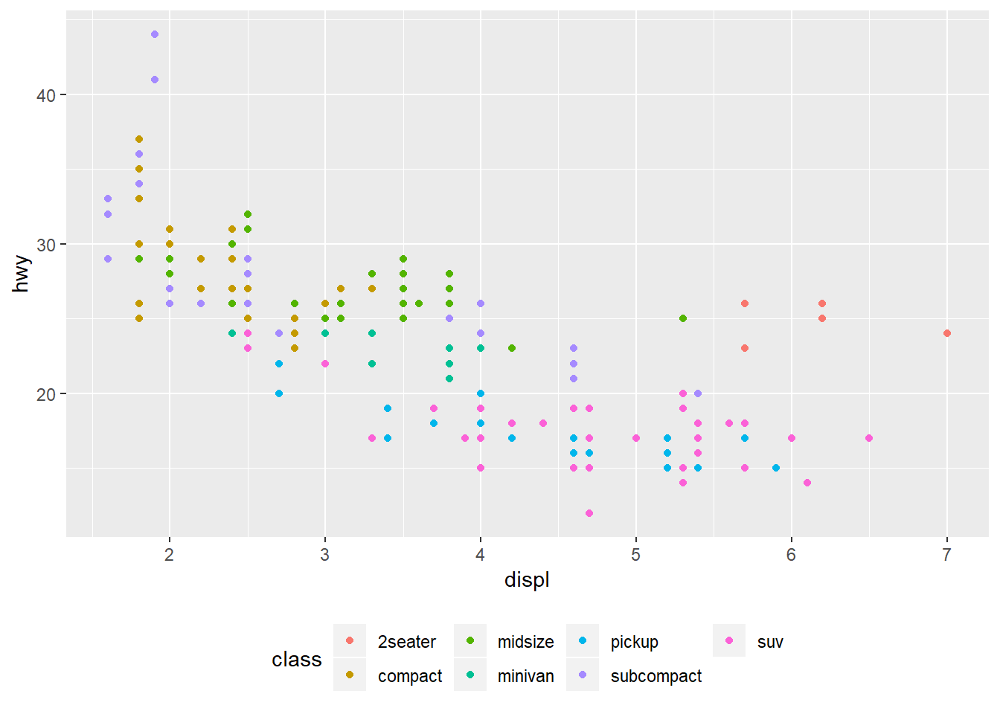

Du kan också använda legend.position = "none" för att inte ha någon förklaring alls.
För att styra själva utseendet används guides() tillsammans med guide_legend() eller guide_colorbar(). I exemplet nedan används två andra viktiga verktyg:
– nrow används för att kontrollera hur många rader förklaringen använder och
– overriding.aes för att justera aesthetics
ggplot(mpg, aes(displ, hwy)) +
geom_point(aes(colour = class)) +
geom_smooth(se = FALSE) +
theme(legend.position = "bottom") +
guides(colour = guide_legend(nrow = 1, override.aes = list(size = 4)))## `geom_smooth()` using method = 'loess' and formula 'y ~ x'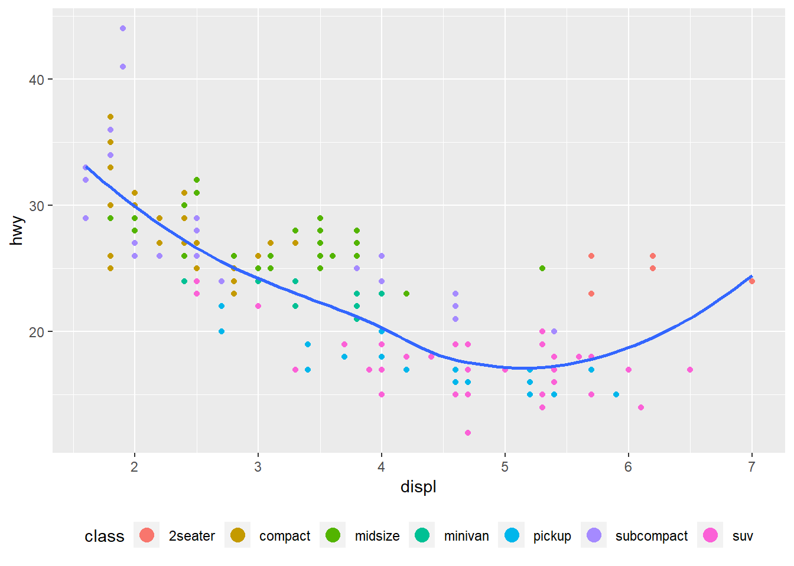
25.3.3 Byta ut en scale
Istället för att skruva litegrann på detaljer kan du byta en scale helt och hållet. Det kan vara särskilt intressant beträffande två typer av scales: scales för positionering (continuous positioning scales) och färgskalor (color scales).
Sättet att byta ut scales fungerar i princip på samma sätt för samtliga scales, så har du lärt dig principerna för dessa två scale replacements så har du lärt dig för samtliga.
Det är ofta bra att visualisera transformeringar av variabler för att lättare se samband mellan dem, så som vi gjorde med diamonds tidigare:
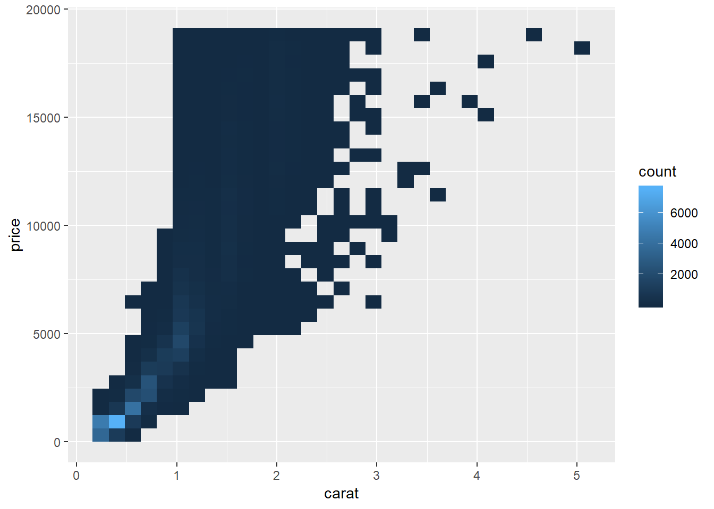
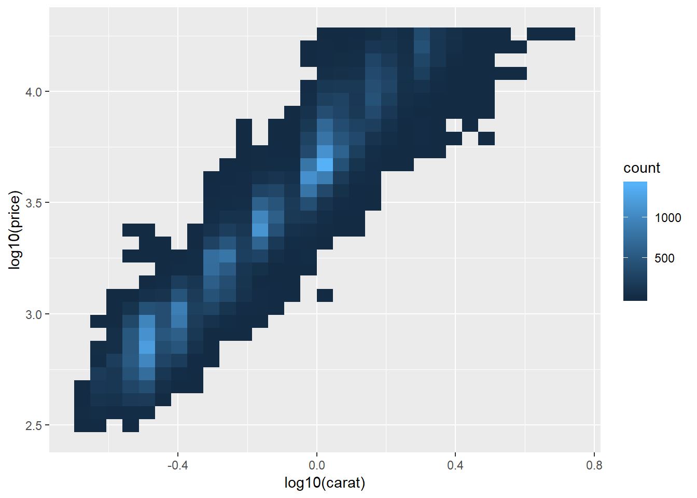
Nackdelen med detta är att axlarna nu är markerade med värdet på de transformerade variablerna vilket kan göra dem mer svårtolkade. Istället för att göra transformeringen i aesthetics-mappningen kan vi göra dem med hjälp av scales. Detta är visuellt samma sak men axlarna innehåller original-värdena:
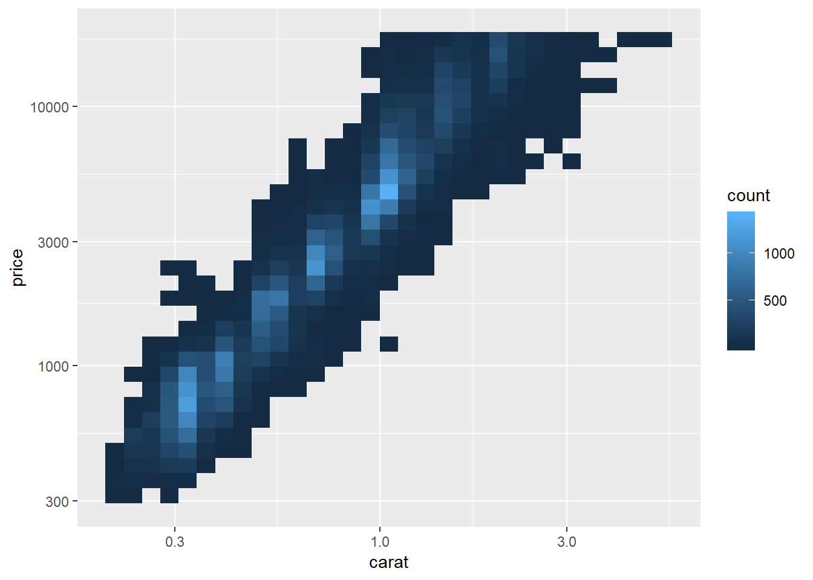
En annan scale som ofta justeras är colour. Standard för en kategorisk scale plockar färger jämnt fördelade över färg-hjulet. Användbara alternativ är ColorBrewer scales som innehåller en mängd olika möjligheter att färgsätta. Ett exempel är en uppsättning färger som är lättare för personer med färgblindhet att avläsa:
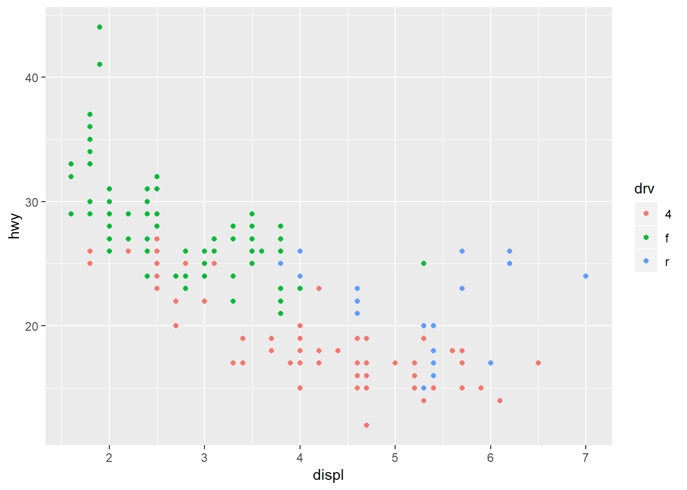
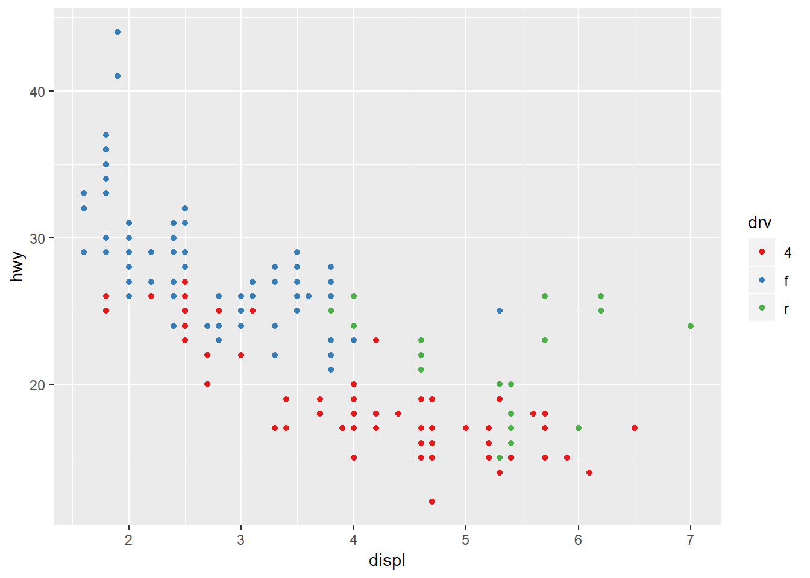
ColorBrewer scales finns dokumenterade på http://colorbrewer2.org/ och kan användas i R via modeulen RColorBrewer. Här nedan ses alla paletter:
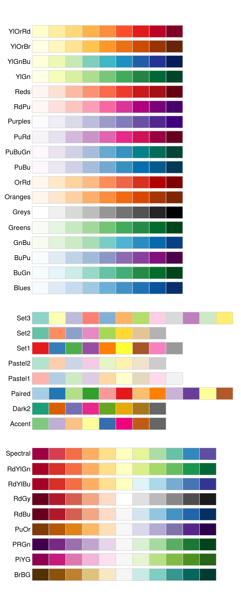
När det finns en förutbestämd koppling mellan kategori och färg kan du avända scale_color_manual(). Om vi t.ex. mappar de två största politiska partierna i USA till färg vill vi använda rött för republikaneroch blått för demokrater:
presidential %>%
mutate(id = 33 + row_number()) %>%
ggplot(aes(start, id, colour = party)) +
geom_point() +
geom_segment(aes(xend = end, yend = id)) +
scale_colour_manual(values = c(Republican = "red", Democratic = "blue"))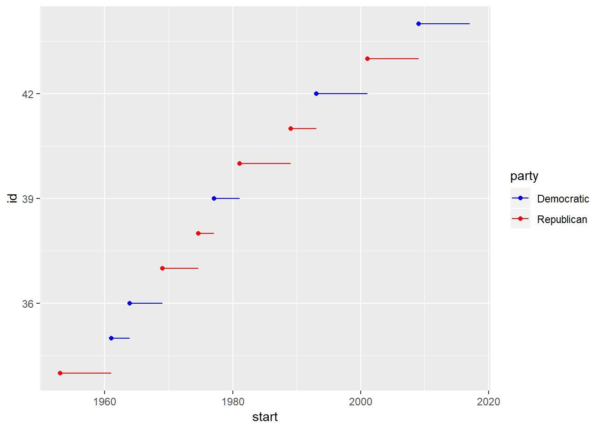
För färg-gradienter kan du använda scale_color_gradient() eller scale_fill_gradient(). Om du har två divergerande färgskalor, t.ex. för att ange positiva och negativa värden, kan du använda scale_color_gradient2().
Ett annat alternativ är scale_color_viridis() som finns i modulen viridis. Det är en kontinuerlig analog till den kategoriska ColorBrewer skalorna:
df <- tibble(
x = rnorm(10000),
y = rnorm(10000)
)
ggplot(df, aes(x, y)) +
geom_hex() +
coord_fixed()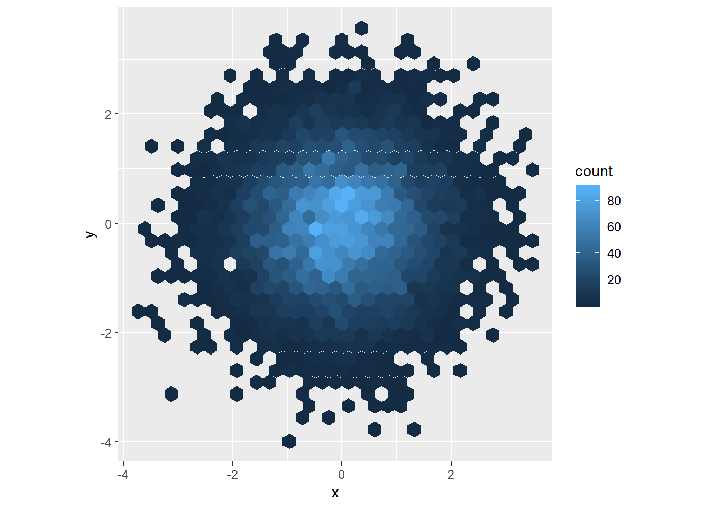
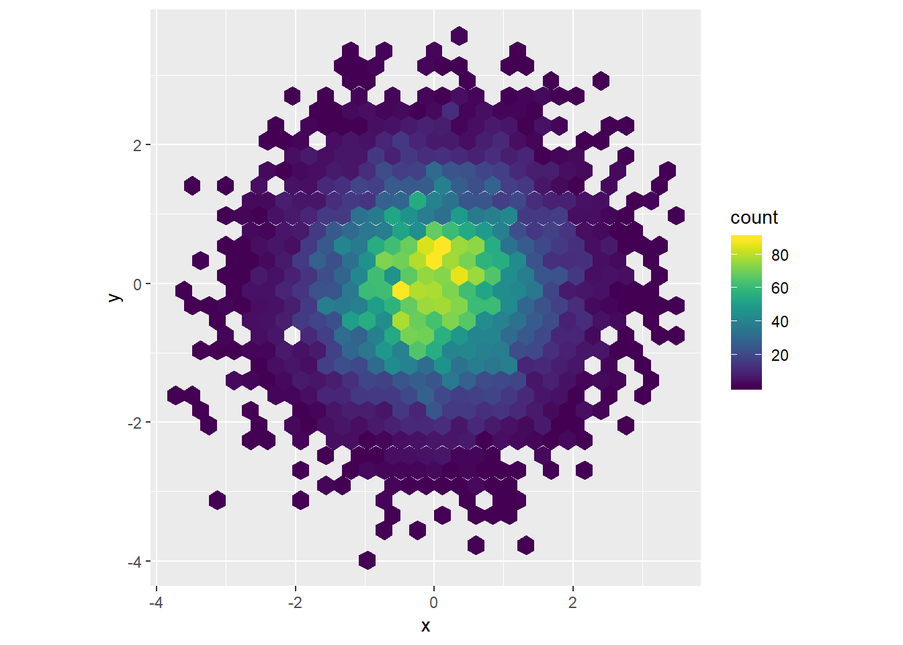
Notera att alla färgskalor finns i två versioner, en _fill_ och en _color_ som matchar fill resp color aesthetics. Och “color” kan även anges som “colour”.
25.4 Zooming
Det finns tre sätt att kontrollera gränserna för grafen :
- Justera vilka data som ska plottas
- Definiera gränserna för vardera axeln
- Definiera
xlimochylimicoord_cartesian()
För att zooma in en begränsad del av en graf är det i regel bäst att använda coord_cartesian(). Jämför nedanstående:
ggplot(mpg, mapping = aes(displ, hwy)) +
geom_point(aes(color = class)) +
geom_smooth() +
coord_cartesian(xlim = c(5, 7), ylim = c(10, 30))## `geom_smooth()` using method = 'loess' and formula 'y ~ x'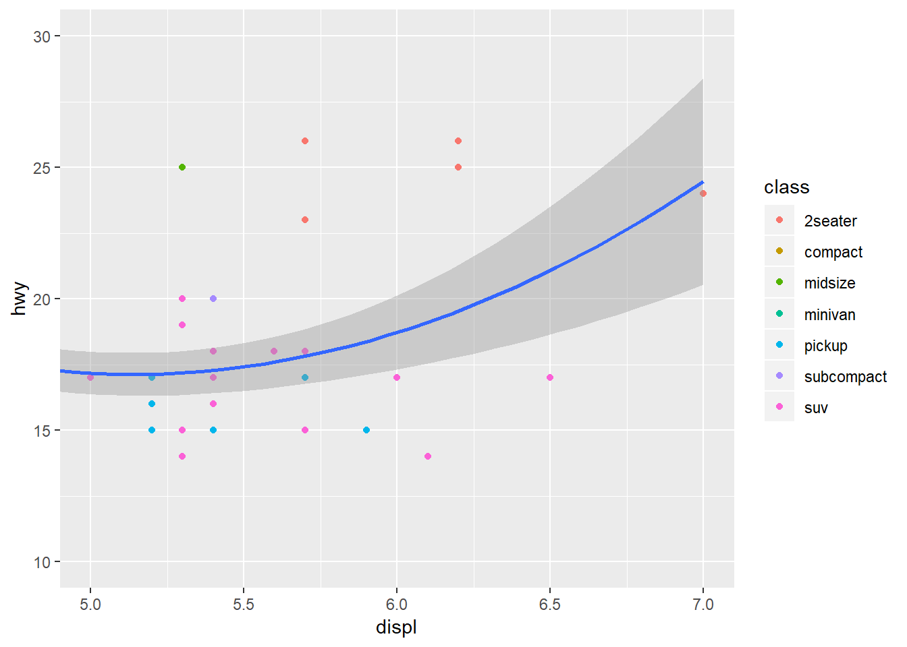
mpg %>%
filter(displ >= 5, displ <= 7, hwy >= 10, hwy <= 30) %>%
ggplot(aes(displ, hwy)) +
geom_point(aes(color = class)) +
geom_smooth()## `geom_smooth()` using method = 'loess' and formula 'y ~ x'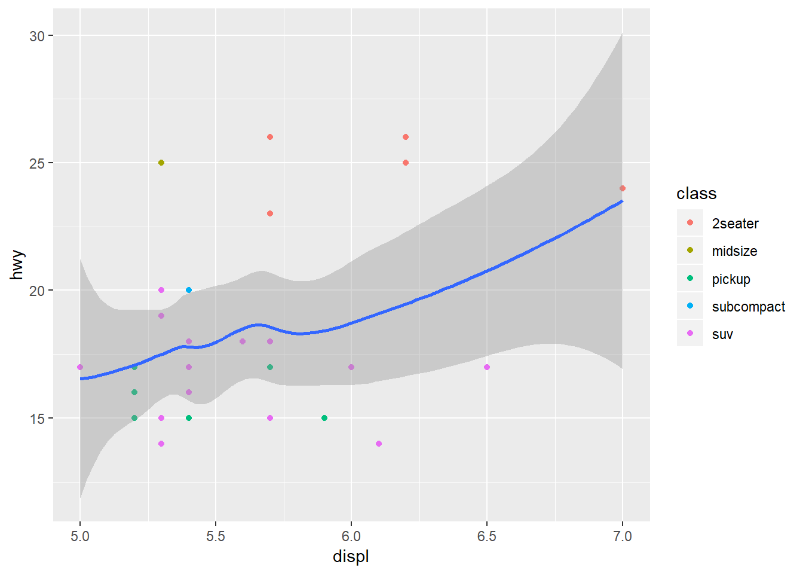
Du kan även definiera limits för de individuella skalorna. Att minska limits innebär i praktiken att göra ett urval av data, subsetting. Det är generellt sett mer användbart för att expandera skalorna, t.ex. för att matcha skalorna på två grafer. Om vi t.ex. vill extrahera två klasser av bilar och plotta dem separat, blir det svårt att jämföra graferna eftersom alla tre skalor (x- och y-axlar samt color-aesthetic kommer att ha olika omfång:
suv <- mpg %>% filter(class == "suv")
compact <- mpg %>% filter(class == "compact")
ggplot(suv, aes(displ, hwy, colour = drv)) +
geom_point()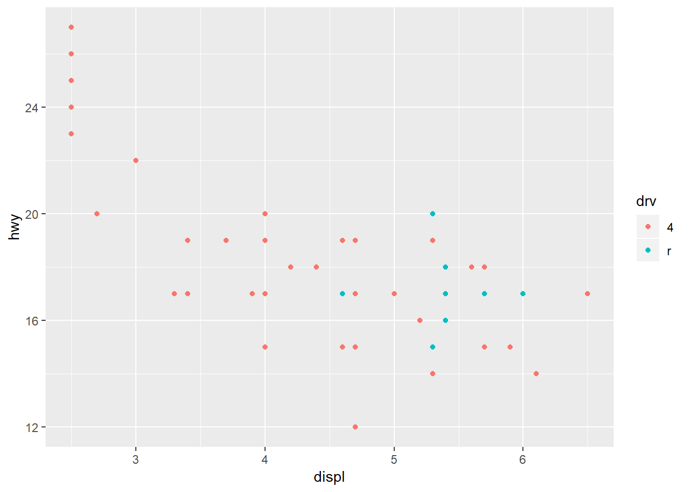
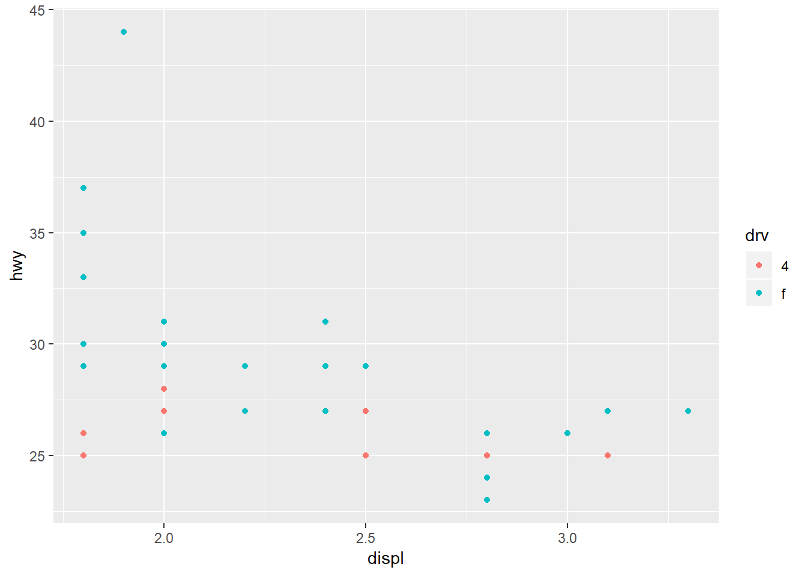
Ett sätt att runda detta problem är att använda samma skala på båda graferna genom argumentet limits och ange gränserna för hela datasetet:
x_scale <- scale_x_continuous(limits = range(mpg$displ))
y_scale <- scale_y_continuous(limits = range(mpg$hwy))
col_scale <- scale_colour_discrete(limits = unique(mpg$drv))
ggplot(suv, aes(displ, hwy, colour = drv)) +
geom_point() +
x_scale +
y_scale +
col_scale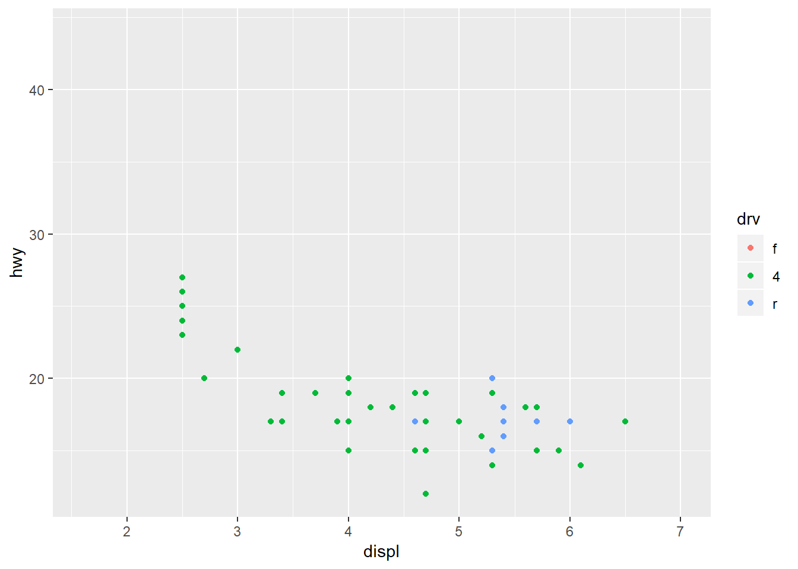
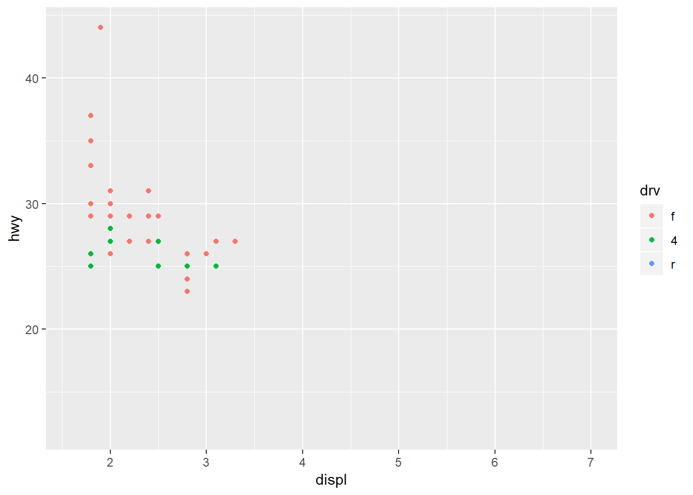
Här kunde du förstås ha kunnat använda facets, men denna teknik är generellt användbar, t.ex. om du vill skapa grafer på olika sidor i ett dokument.
25.4.1 Teman (themes)
Till sist, du kan också definiera ickedata-komponenter med hjälp av ett tema:
ggplot(mpg, aes(displ, hwy)) +
geom_point(aes(color = class)) +
geom_smooth(se = FALSE) +
theme_bw()## `geom_smooth()` using method = 'loess' and formula 'y ~ x'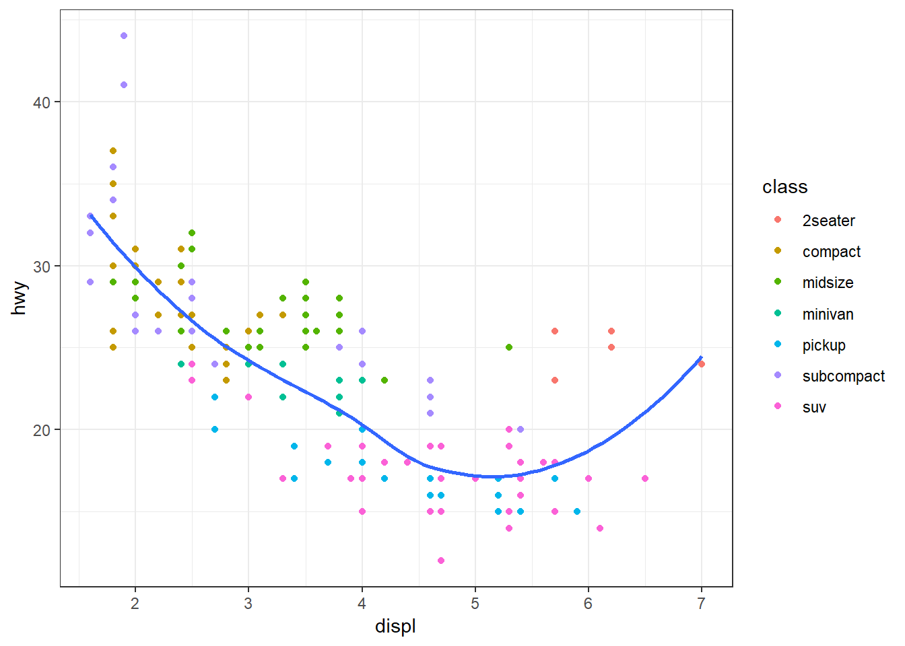
ggplot2 inkluderar åtta olika teman (se nedan) men det finns en rad andra i tilläggs-moduler såsom ggthemes (https://github.com/jrnold/ggthemes).
Det är förstås också möjligt att justera individuella delar av ett tema, t.ex. typsnitt, typstorlek. En bra vägledning finns på ggplot2 hemsidan https://ggplot2.tidyverse.org/
25.5 Spara graferna
Det finns två sätt att exportera graferna till dokument utanför R-miljön, via ggsave() och via knitr. ggsave() sparar den senaste grafen till disk:
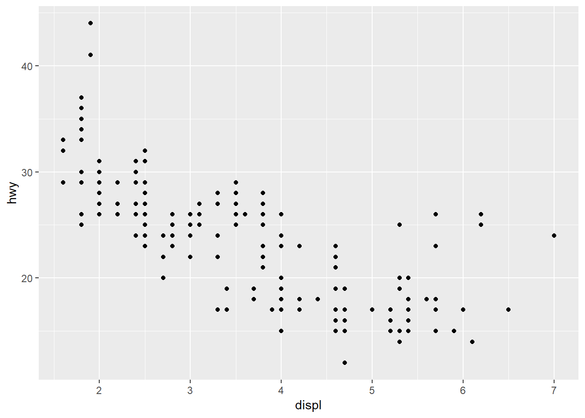
## Saving 7 x 5 in imageOm du inte specificerar height och width kommer formatet att definieras automatiskt. Om du vill att koden ska vara reproducerbar (och det vill du) bör du ange höjd och bredd.